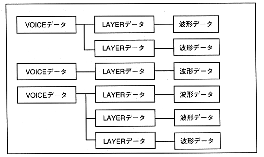

A collection of the above components is called one tone bank data. Each tone bank data has at least one voice, and can have up to 128 voices as memory allows. In this sound system, you can have multiple tone bank data in the same map, and each of them can be played simultaneously as independent sound sources. Therefore, you can play a song or sound effect in one bank and swap another bank. This makes it possible to construct a flexible system with good development efficiency and memory efficiency.
